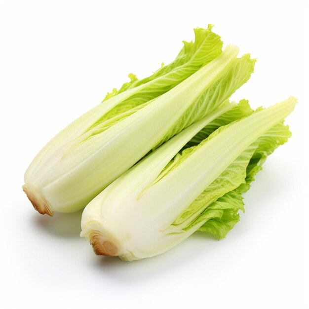

1. Seasons for Growing Endive

Endive is a leafy green vegetable that thrives in cooler weather. The best seasons for growing endive are:
- Spring: Sow seeds in early spring (March to April) for a summer harvest.
- Fall: For a fall harvest, plant seeds in late summer (July to August). Endive improves in flavor after exposure to cooler temperatures.